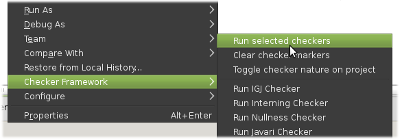

Checker Plugin for Eclipse
What it is:
Pluggable type-checkers are bug-finding and verification tools. They help you to detect and prevent null pointer errors, incorrect uses of equality operations, and side effect errors (and other errors).
Where to get it:
The repository for the code is hosted on Eclipse Labs here:
http://code.google.com/a/eclipselabs.org/p/checker-plugin/. The repository is hosted using Mercurial.
To check the source out, use the following command:
hg clone https://hg.codespot.com/a/eclipselabs.org/checker-plugin/ checker-plugin
Instructions on how to install the plugin from Eclipse can be found below.
Requirements:
The plugin has been tested on Linux, Eclipse 3.6.0 and Java 6.
Your Eclipse must be running on a Java 6 VM or newer. To see what Java VM and Eclipse is running on, select from the menu Help → About Eclipse Platform → Installation Details. Depending on your installation, the menu may be Help → About Eclipse SDK → Installation Details.
You will also need the Checker Framework, which you can download here
How to install:
- In Eclipse, select from the menu Help → Install New Software...
- Click Add....
- Enter the following:
- Name: Checker Framework
- Location: http://types.cs.washington.edu/checker-framework/eclipse
- Under Work with:, you should see "Checker Framework".
Select that entry and look at the selection area below. - In the selection area, you should see the "Checker Framework Feature"
under the "Uncategorized" category.
(You may have to expand the tree to make the feature visible.)
Select the checkbox next to it and click Next. - Select the I accept the terms in the license agreement option and click Next.
- Then click Finish.
- The plugin is not digitally signed. Install it anyway.
- Click Yes to restart Eclipse.
How to use Checkers Feature:
First, you may add checkers.jar to your project's classpath. (Eclipse may complain about unresolved classes referenced from a classfile. This does not affect the checking, but to make the warning go away, add javac.jar to the project's classpath.) This is not necessary but will keep Eclipse from complaining about missing annotation classes. Alternatively, you can use the Implicit Import feature described below.
To perform the checking, select the checker from the context menu of a Java project, for example Checker Framework → Run Nullness Checker. The checker will run and warnings will be added to the Problems view. To remove the warning markers, run Checker Framework → Clear checker markers. Note that markers are cleared per project.
You can also run checkers on individual packages or files. To do this, just right click on the package or file you want to typecheck and use the context menu as documented above.
If you want to run multiple checkers at once, you can do so using the Run selected checkers action. This will run the checkers that are selected in the Checkers section in the preferences, which are accessible through Window → Preferences. These selections are also used for automatic build, which is described below.
Automatic build
The plugin also supports automatically typechecking your code when a change is detected. To enable this behavior for a project, right click on your project and run Checker Framework → Toggle checker nature on project. This will add the checker nature to your project (assuming it is not already present), which will cause Eclipse to automatically run checkers on subsequent edits. Selecting the action again will disable the builder.
The checkers that are run are those that are selected in the preferences.
Preferences
Most of the commandline options that can be supplied to the Checker Framework compiler are also supported by this plugin. To set the various options, go to Window → Preferences and select the Checker section. The options that correspond to commandline switches will be marked as such.
For more information on the supported commandline options, see the Checker Framework Documentation.
Custom checker
If you would like to supply your own classes to use as checkers, you can do so in the Custom Checker preference page. By pressing the Search... button you can select from a searchable listing of classes in the workspace. The class or classes you select must be on the classpath of the project you are type checking in order to work. The custom class that you select will be used if you select the Run Custom Checker action from the popup menu. Note that if the preference field is empty you will get a warning message that no checkers were configured.
If your checker supports extra commandline flags, you can pass these in the Additional compiler parameters field in the preferences, which will append the input to the compiler's arguments.
In the future, we plan to support a more fully featured method of adding and customizing your own checkers.
Development style and implicit imports
If you work in a team and not everyone uses the Checker Framework or if you use older versions of Java, you can use implicit imports to avoid creating an explicit dependency on checkers.jar. Just enable the setting in the preferences. After that, you can use annotations in comments as described on this page: http://types.cs.washington.edu/checker-framework/#annotations-in-comments.
How to report problems:
Submit bug reports at http://code.google.com/a/eclipselabs.org/p/checker-plugin/issues/list
Troubleshooting tips
If you are having problems with the output from the plugin, check to see what the output on the Eclipse console indicates. The console will get the raw output from the compiler. Attaching the console output to a bug report can also help us figure out which component is reponsible for the bug.
If you are finding that the plugin emits different or additional warnings that Eclipse does not that are unrelated to checkers, this is likely because the Eclipse compiler and Sun's javac compiler have different behaviors on certain kinds of errors. In this case, you can either try to fix the underlying cause for the warning or you can add a regular expression in the preferences (see the "Regex for warning/error filter" field) to filter the compiler output.
In the case that you need to use a special version of the JRE, the plugin should use your system specified JRE (whatever System.getProperty("java.home") returns). However, if would like to use custom JDK libraries you should specify those on the Eclipse system library buildpath in the project properties. You also have the option of explicitly setting the java executable to use in the plugin preferences.